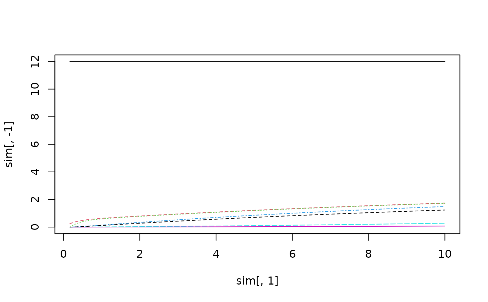

Simulate anaesthetic uptake
sim_anaesthetic_uptake(
pinsp,
delta_time = 0.1,
total_time = 10,
conductances,
capacitances,
use_humidification = FALSE,
pambient = 101.325,
pwater = 6.26,
use_concentration_effect = FALSE,
tp_factor = stp_factor(),
alveolar_minute_ventilation = conductances["lung"]/tp_factor,
partial_pressures = c(pinsp = pinsp, lung = 0, vrg = 0, mus = 0, fat = 0, cv = 0)
)numeric(1), inspiratory partial pressure of the anaesthetic.
numeric(1), time difference between each calculation step.
numeric(1), total time to simulate.
numeric(4), conductances.
numeric(4), capacitances.
logical(1), should humification take into account
(default: FALSE).
numeric(1), ambient pressure in kPa.
numeric(1), water pressure in kPa.
logical(1), should concentration effect
take into account (default: FALSE).
numeric, temperature/pressure factor.
numeric(1), alveolar minute ventilation
in l/min.
logical(1), initial partial pressures
settings to start with.
matrix, with partial pressures for each simulation step.
Figure 1 in Cowles, A. L., Borgstedt, H. H., & Gillies, A. J. (1973). A simplified digital method for predicting anesthetic uptake and distribution. Computers in Biology and Medicine, 3(4), 385-395. doi:10.1016/0010-4825(73)90004-8
## Test case with diethyl ether as in Cowles 1973, Table 4
blood_flow <- cardiac_output(total = 6.3)
part_coefs <- tissue_coefficients("diethyl-ether")
# Volumes as in Cowles, Table 3
tissue_volume <- c(
lung_air = 2.68, lung_tissue = 1.0,
vrg = 8.83, mus = 36.25, fat = 11.5
)
blood_volume <- c(lung = 1.4, vrg = 3.2, mus = 0.63, fat = 0.18)
conductances <- c(
lung = conductance(
flow = 4.0, # alveolar minute ventilation
partition_coefficient = 1.0 # gas:gas partition coefficient
),
vrg = conductance(blood_flow["vrg"], part_coefs["lung"]),
mus = conductance(blood_flow["mus"], part_coefs["lung"]),
fat = conductance(blood_flow["fat"], part_coefs["lung"])
)
capacitances <- c(
lung = lung_capacitance(
tissue_volume["lung_air"],
## blood volume and tissue:gas == blood:gas in that case
tissue_volume["lung_tissue"], tissue_coefficient = part_coefs["lung"],
## blood volume and blood:gas part_coefs
blood_volume["lung"], part_coefs["lung"]
),
vrg = capacitance(
tissue_volume["vrg"], part_coefs["vrg"],
blood_volume["vrg"], part_coefs["lung"]
),
mus = capacitance(
tissue_volume["mus"], part_coefs["mus"],
blood_volume["mus"], part_coefs["lung"]
),
fat = capacitance(
tissue_volume["fat"], part_coefs["fat"],
blood_volume["fat"], part_coefs["lung"]
)
)
sim <- sim_anaesthetic_uptake(
pinsp = 12, delta_time = 10/60, total_time = 10,
conductances = conductances, capacitances = capacitances
)
matplot(sim[, 1], sim[, -1])
